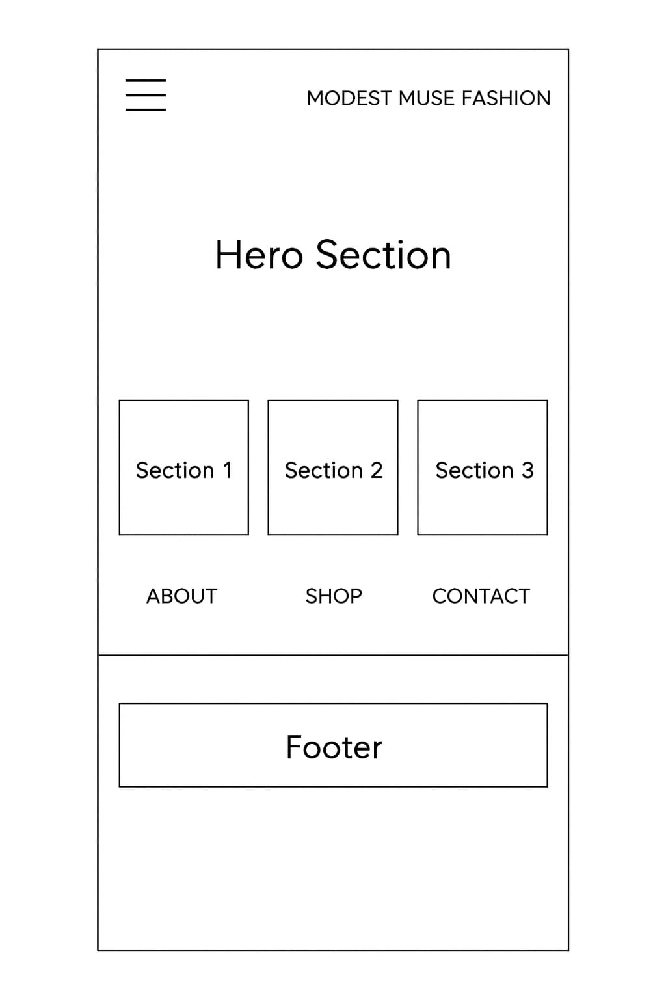
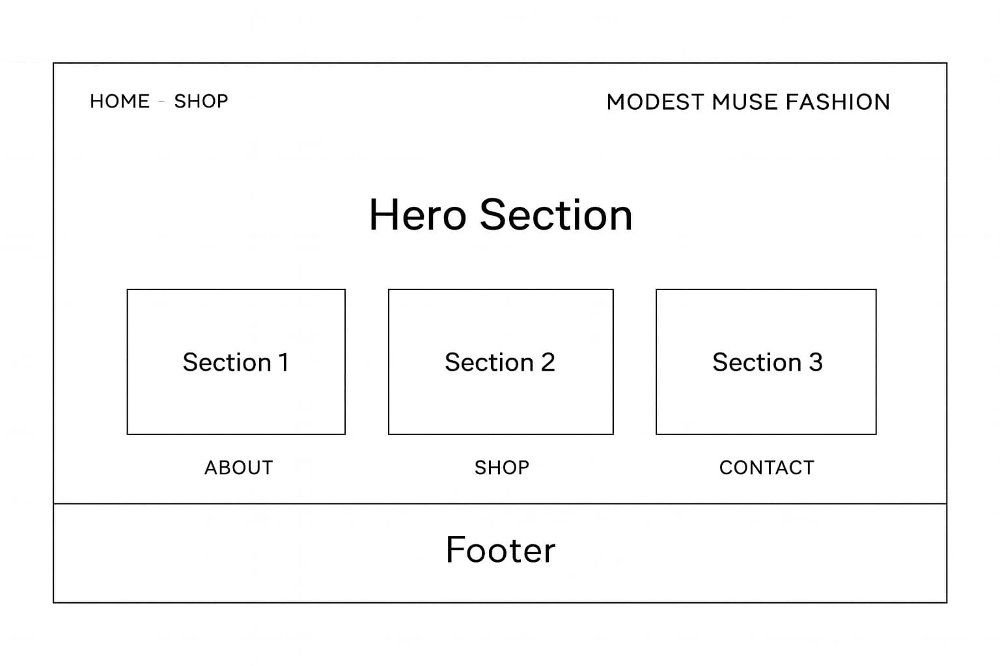

A clothing site dedicated to modest-inspired fashion pieces.
Modest Muse Fashion
I chose this name because it reflects the essence of the brand—fashion that is stylish, modern, and modest. “Muse” implies inspiration, aligning with the goal of providing thoughtfully curated clothing collections for those who value elegant yet conservative styles.
Optional domain availability: modestmusefashion.com
The site serves as a curated destination for modest fashion lovers. The homepage introduces the brand and highlights featured collections, while the collection page showcases a variety of modest clothing categories—from skirts to dresses and tops. The site aims to help users discover modest fashion options that blend comfort, coverage, and contemporary style.
Blush Pink – #E7C6C2
Used for accents, header backgrounds, and visual highlights.
Deep Charcoal – #2F2F2F
Used for headings, titles, and important text for contrast.
These colors were chosen for their soft, refined palette that complements a modest fashion aesthetic.
No more than two fonts are used throughout the site for consistency and simplicity.
Simple layout idea of my site on a smaller screen.
simple layout of my site on wider screens.
